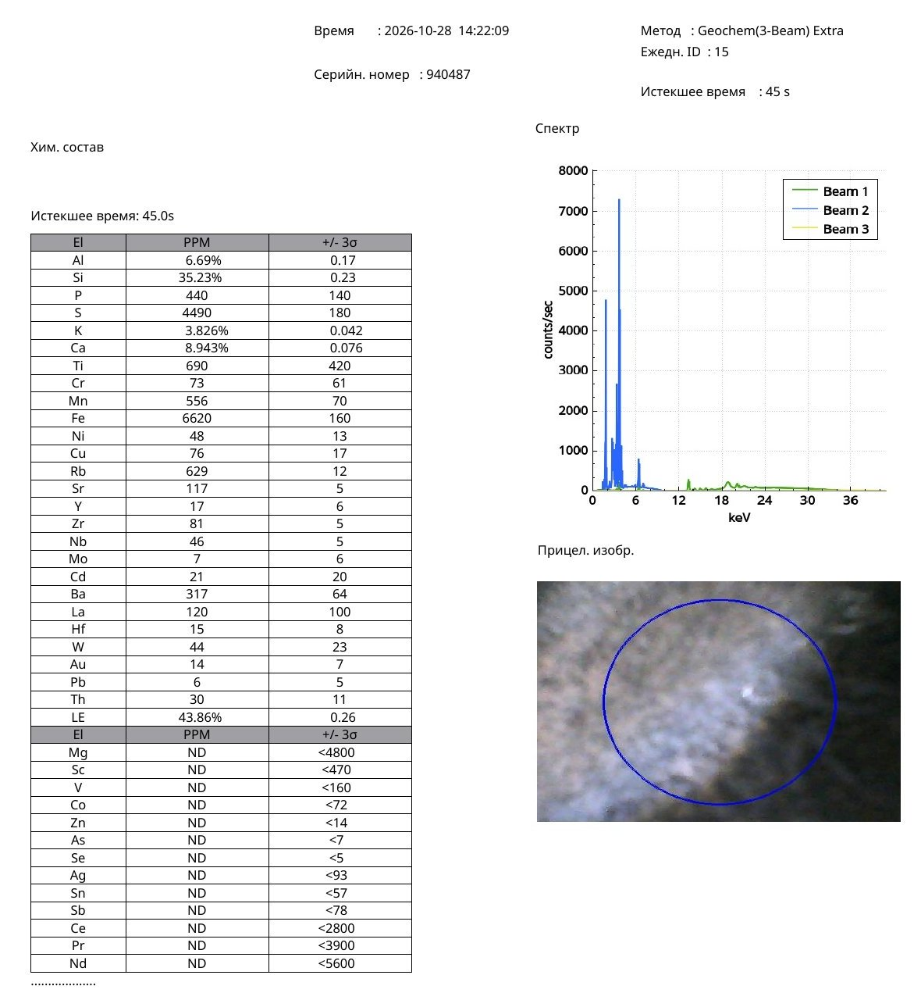
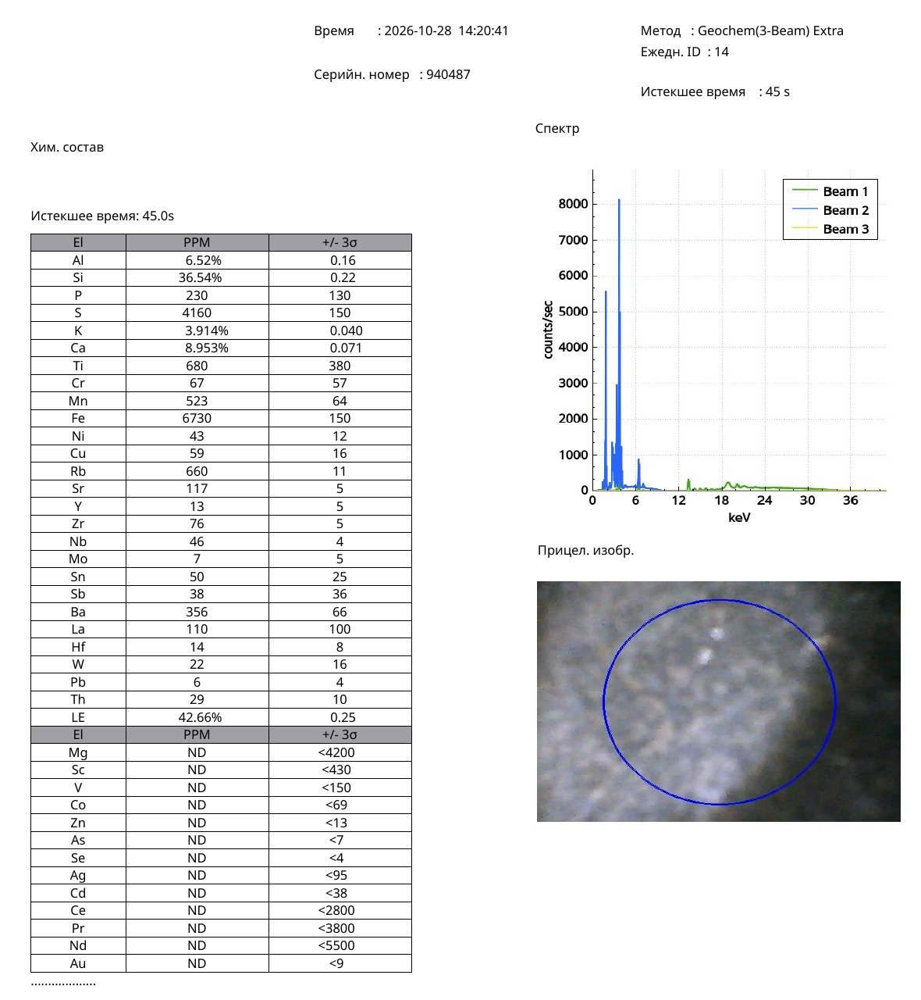

Research Article · Reference Object ro-song-008
An Archaistic Bronze-Inspired Chinese Hu-Type Vase with Fixed Ring Handles: Original Portable X-Ray Fluorescence Data, Satin-Matte Glaze, Horizontal Ribbing, and a Comparative Reference Dataset for Guan–Longquan Celadon Research
Nona Dronova — Independent Researcher — 2026 — Original Research Article · Chinese Ceramic Archaeometry · Comparative Materials Analysis
Abstract
This paper presents the first documented analytical study within the present research project of a Chinese archaistic ceramic vase, designated Sample No. 9, characterized by a bronze-inspired hu-type profile, pronounced horizontal ribbing, paired fixed ceramic ring handles, a grey-olive satin-matte glaze, and a dark annular foot.
The vessel’s visual design imitates several features associated with ancient Chinese bronze vessels. In particular, the contrast between lighter raised ribs and darker recessed grooves produces a patinated-metal appearance. The paired ring-shaped handles, although recalling suspended bronze fittings, are immobile ceramic elements integrated into the vessel’s structure.
A non-destructive portable X-ray fluorescence (pXRF) examination recorded silicon at 35.23 wt%, calcium at 8.943 wt%, aluminium at 6.69 wt%, potassium at 3.826 wt%, and iron at 0.662 wt%. Additional constituents include manganese (556 ppm), rubidium (629 ppm), strontium (117 ppm), zirconium (81 ppm), and barium (317 ppm).
The results were compared with an independently documented bamboo-neck celadon vase, Sample No. 8, examined within the same research project. The two measurements exhibit exceptionally close calcium concentrations of 8.943 and 8.953 wt%, respectively, as well as similar iron, potassium, aluminium, rubidium, and strontium values.
Published examples of Southern Song and Yuan Longquan and Guan-type ceramics establish the historical relevance of bronze-inspired vessel forms, ring handles, horizontal relief decoration, and calcium-bearing celadon glazes.
The present work introduces an original object-specific dataset and proposes a reproducible comparative framework for investigating archaistic Chinese ceramic vessels with bronze-inspired morphology and subdued celadon surfaces.
The study identifies a close analytical relationship between Samples Nos. 8 and 9 while distinguishing compositional similarity from proof of common manufacture or archaeological provenance.
Keywords: Chinese ceramics; archaistic vase; hu-type vessel; bronze imitation; fixed ring handles; horizontal ribbing; satin-matte glaze; portable X-ray fluorescence; Guan ware; Longquan celadon; Southern Song; Yuan dynasty; comparative archaeometry; ceramic reference dataset.
1. Introduction
The imitation of ancient ritual bronze vessels represents an important tradition in Chinese ceramic history.
During the Song dynasty, the renewed study and collection of antiquities encouraged the adaptation of earlier bronze forms into ceramic materials.
Potters reproduced the silhouettes, handles, decorative registers, and proportions of ancient ritual vessels while exploiting the optical and technological possibilities of high-temperature glazes.
Such works did not necessarily reproduce the physical function of their bronze prototypes. Instead, they transformed the visual language of antiquity into ceramic objects suited to contemporary ritual, display, and scholarly appreciation.
The present paper investigates a distinctive example of this artistic approach.
Sample No. 9, provisionally designated the Archaistic Ribbed Hu-Type Vase, possesses a flared mouth, elongated neck, rounded expanding body, repeated horizontal ribs, and two fixed ring-shaped ceramic handles.
Its grey-olive surface has a satin-matte appearance with fine mottling and darker coloration in the recessed portions of the relief.
The vessel was examined through photographic documentation and portable X-ray fluorescence spectroscopy.
A central objective of the study is to compare its chemical profile with Sample No. 8, a bamboo-neck celadon vase from the same research collection.
The investigation addresses three principal questions:
- What elemental characteristics are present in the analyzed surface of Sample No. 9?
- How do its morphology and glaze appearance relate to documented archaistic Guan and Longquan ceramics?
- How closely does its measured elemental profile correspond to that of Sample No. 8?
The resulting evidence provides an original basis for future comparative research.
2. Historical Context: Chinese Ceramic Imitations of Bronze
2.1. Antiquarianism during the Song dynasty
The Song period witnessed renewed interest in the classification, collecting, and interpretation of ancient ritual objects.
Bronze vessels of the Shang and Zhou dynasties were studied as material expressions of classical ritual culture.
Their forms became models for later objects produced in bronze, jade, lacquer, and ceramic materials.
The hu vessel, generally characterized by a substantial body, relatively narrow neck, and expanded mouth, was among the forms repeatedly adapted.
The ceramic versions often retained distinctive structural features of bronze prototypes, including projecting handles, decorative bands, and segmented surfaces.
2.2. Guan ware and official ceramic production
The Southern Song court established itself at Lin’an, present-day Hangzhou, after 1127.
The production of Guan ware became closely associated with the ceremonial and aesthetic requirements of the imperial household.
Archaeological investigations at Laohudong and Jiaotanxia have provided substantial evidence for the materials and techniques used in Southern Song official-kiln production.
Guan glazes are especially notable for their complex optical properties, subdued colors, thick glaze layers, and characteristic crackle.
Scientific investigations have linked these effects to glaze formulation, firing conditions, microstructure, and the relationship between glaze and ceramic body.
2.3. Longquan and the bronze-inspired ceramic tradition
The Longquan kiln complex in Zhejiang was another major producer of high-quality celadon ceramics.
Longquan workshops manufactured numerous vessel forms inspired by ancient ritual bronzes.
These included hu, gu, zun, and related shapes.
The production of Guan-type celadons at Longquan also demonstrates the interaction between official-kiln aesthetics and regional ceramic manufacture.
The distinction between Guan and Guan-type Longquan wares is therefore essential when interpreting vessels with overlapping formal and technological characteristics.
3. Description of Sample No. 9
3.1. General morphology
The vessel has a broad outward-flaring mouth, a relatively long neck, sloping shoulders, and a body that expands downward before contracting toward a comparatively narrow foot.
The mouth rim is rounded and visually substantial.
The overall profile resembles the family of archaistic hu-type vessels inspired by ancient bronze forms.
The vessel is vertically symmetrical in its principal architecture.
3.2. Horizontal ribbing
A defining characteristic of Sample No. 9 is its repeated horizontal relief decoration.
The ribs are distributed across the neck, shoulder, and body.
They create alternating raised and recessed zones.
The ribs are not simply painted lines. They are structural features of the ceramic surface.
The elevated portions appear relatively light, while the grooves appear darker.
This contrast contributes strongly to the impression of aged, patinated bronze.
The regularity of the relief also emphasizes the careful execution of the vessel.
3.3. Fixed ring-shaped handles
The vessel has two symmetrically arranged handles attached to its upper body.
Each consists of a projecting sculptural lug and a ring-shaped ceramic element.
The ring elements are immobile.
They are therefore best described as fixed ceramic ring handles rather than functional suspended rings.
This distinction is technologically significant.
The handles reproduce the visual vocabulary of bronze fittings while adapting their construction to the properties of ceramic material.
The resulting design emphasizes the appearance of an ancient metal vessel rather than the mechanical function of movable bronze rings.
3.4. Glaze color and reflectivity
The surface is predominantly grey-olive, with darker brown-grey and graphite-like areas.
Its reflectivity is subdued.
Soft highlights occur on the raised portions of the relief, whereas the recessed grooves are more strongly shaded.
The overall appearance is satin-matte rather than uniformly glossy.
The glaze exhibits a finely mottled texture visible in the close-up photographs.
The visual effect resembles the irregular patina of aged bronze.
This description refers to the appearance of the ceramic surface and does not imply the presence of a metallic bronze coating.
3.5. Base construction
The underside photograph shows a dark brown annular foot surrounding a recessed grey-green glazed center.
The transition between the dark foot and the glazed center is sharply defined.
The recessed central surface displays fine mottling and subtle linear features.
The foot provides an important morphological comparison with other Chinese high-temperature ceramic traditions.
No separate elemental measurement of the dark foot is included in the present dataset.
4. Materials and Analytical Methods
4.1. Object identification
Object: Archaistic ribbed hu-type vase
Sample ID: 9
Project designation: vaza poloska
Collection: Private research collection
Analytical method: Portable X-ray fluorescence
Measurement mode: In situ
Acquisition time: 45 seconds
4.2. Photographic documentation
The available visual record consists of:
- An overall photograph of the vase.
- A close-up photograph of the fixed ring handles and ribbed surface.
- A magnified image showing the fine surface texture and a dark recessed boundary.
- A photograph of the underside and foot.
- The targeting image included in the pXRF report.
These images were examined for vessel geometry, relief structure, glaze appearance, and the relationship between lighter and darker surface zones.
4.3. Portable X-ray fluorescence
A portable XRF instrument was used to examine the ceramic surface non-destructively.
The report presents elemental concentrations and three-standard-deviation uncertainty estimates.
The measurement is identified as Sample No. 9.
The accompanying targeting image documents a visually mottled region of the surface.
The precise relationship of the measurement spot to an individual raised rib or recessed groove has not yet been independently established.
The data are therefore interpreted as the elemental profile of the analyzed surface, without assigning them specifically to either the light or dark relief zone.
4.4. Methodological considerations
Portable XRF results are influenced by several factors, including surface geometry, glaze thickness, matrix composition, and possible contributions from the underlying ceramic body.
The measurement was obtained using a geochemical analytical configuration rather than a demonstrated ceramic-specific quantitative calibration.
Accordingly, the elemental concentrations provide a valuable comparative fingerprint but should not be equated automatically with laboratory bulk glaze compositions.
Comparisons between objects measured under similar conditions are especially useful, provided that the limitations of single-point measurements are recognized.
5. Original Elemental Composition of Sample No. 9
5.1. Principal and trace elements
Table 1. Original pXRF results for Sample No. 9.
| Element | Concentration | Reported ±3σ |
|---|---|---|
| Al | 6.69 wt% | 0.17 wt% |
| Si | 35.23 wt% | 0.23 wt% |
| P | 440 ppm | 140 ppm |
| S | 4,490 ppm | 180 ppm |
| K | 3.826 wt% | 0.042 wt% |
| Ca | 8.943 wt% | 0.076 wt% |
| Ti | 690 ppm | 420 ppm |
| Cr | 73 ppm | 61 ppm |
| Mn | 556 ppm | 70 ppm |
| Fe | 6,620 ppm | 160 ppm |
| Ni | 48 ppm | 13 ppm |
| Cu | 76 ppm | 17 ppm |
| Rb | 629 ppm | 12 ppm |
| Sr | 117 ppm | 5 ppm |
| Y | 17 ppm | 6 ppm |
| Zr | 81 ppm | 5 ppm |
| Nb | 46 ppm | 5 ppm |
| Mo | 7 ppm | 6 ppm |
| Cd | 21 ppm | 20 ppm |
| Ba | 317 ppm | 64 ppm |
| La | 120 ppm | 100 ppm |
| Hf | 15 ppm | 8 ppm |
| W | 44 ppm | 23 ppm |
| Au | 14 ppm | 7 ppm |
| Pb | 6 ppm | 5 ppm |
| Th | 30 ppm | 11 ppm |
The report also lists a light-element balance of 43.86 wt%.
Several additional elements were not detected above the instrument’s reporting limits, including magnesium, vanadium, cobalt, zinc, arsenic, selenium, silver, tin, antimony, cerium, praseodymium, and neodymium.
Values close to their reported uncertainties, especially certain minor and trace elements, should not be overinterpreted.
Original pXRF Protocols — Olympus analyser, 28 October 2026

Figure 5. Original portable XRF report for Sample No. 9, including elemental concentrations, analytical uncertainties, spectrum, and targeting image. Click to open full size.

Supplementary. Original portable XRF report for Sample No. 8, the bamboo-neck celadon vase used for comparison. Click to open full size.
5.2. Principal compositional characteristics
The measurement identifies a silicon-rich surface containing substantial calcium, aluminium, and potassium.
Calcium reaches 8.943 wt%, while iron is present at 6,620 ppm, equivalent to 0.662 wt%.
The presence of calcium is compatible with a calcium-bearing silicate glaze system.
Iron is a plausible contributor to the glaze’s coloration, although its oxidation state and precise optical role cannot be established by pXRF alone.
The low measured copper concentration and absence of detectable tin above the reported threshold do not support interpretation of the analyzed surface as a conventional copper–tin bronze layer.
The bronze-like appearance is therefore more plausibly associated with ceramic design and glaze optics than with a metallic bronze surface.
6. Calculated Oxide Equivalents
For orientation within the literature on ceramic glazes, selected elemental concentrations were converted to theoretical oxide equivalents.
Table 2. Stoichiometric oxide equivalents calculated from the original pXRF readings.
| Oxide | Calculated equivalent |
|---|---|
| SiO₂ | 75.37 wt% |
| Al₂O₃ | 12.64 wt% |
| CaO | 12.51 wt% |
| K₂O | 4.61 wt% |
| Fe₂O₃ | 0.95 wt% |
These figures are independent conversions from the reported elemental values.
They are not normalized to 100%, and their total exceeds 100%.
They must not be interpreted as a directly measured, fully quantitative oxide composition of isolated glaze material.
Their principal utility is to clarify the chemical relationships of the measured elements and guide subsequent laboratory comparison.
7. Comparison with Sample No. 8: The Bamboo-Neck Celadon Vase
7.1. Rationale for comparison
Sample No. 8 is a bamboo-neck celadon vase examined within the same research project.
It has a grey-olive semi-matte glaze, bamboo-jointed neck, flared mouth, and a contrasting annular base.
Its visual design differs substantially from that of Sample No. 9.
Sample No. 8 evokes a natural bamboo stem.
Sample No. 9 evokes an ancient bronze vessel.
Despite these different design concepts, their pXRF measurements reveal a notably close elemental relationship.
7.2. Comparative results
Table 3. Original pXRF elemental concentrations for Samples Nos. 8 and 9.
| Element | No. 9: Ribbed hu-type vase | No. 8: Bamboo-neck vase |
|---|---|---|
| Si | 35.23 wt% | 36.54 wt% |
| Al | 6.69 wt% | 6.52 wt% |
| Ca | 8.943 wt% | 8.953 wt% |
| K | 3.826 wt% | 3.914 wt% |
| Fe | 0.662 wt% | 0.673 wt% |
| Mn | 556 ppm | 523 ppm |
| Rb | 629 ppm | 660 ppm |
| Sr | 117 ppm | 117 ppm |
| Zr | 81 ppm | 76 ppm |
| Ba | 317 ppm | 356 ppm |
7.3. Calcium correspondence
The calcium concentrations are particularly close:
Sample No. 9: 8.943 wt% Ca.
Sample No. 8: 8.953 wt% Ca.
The absolute difference is only 0.010 percentage points.
This difference is substantially smaller than the reported measurement uncertainty for calcium in either individual result.
The measurements are therefore analytically consistent with closely similar calcium concentrations at the sampled surfaces.
They do not demonstrate exact identity of the underlying glaze recipes.
7.4. Iron correspondence
The iron concentrations are:
Sample No. 9: 0.662 wt% Fe.
Sample No. 8: 0.673 wt% Fe.
The absolute difference is 0.011 percentage points.
These results are also close in relation to their reported measurement uncertainties.
This is relevant because iron-bearing compounds contribute to the coloration of many Chinese celadon glazes.
However, the visible differences between the two surfaces may also depend on glaze thickness, firing atmosphere, iron oxidation state, microstructure, and illumination.
7.5. Trace-element correspondence
Rubidium concentrations are 629 ppm and 660 ppm, respectively.
Strontium is reported at 117 ppm for both specimens.
Zirconium values are 81 ppm and 76 ppm.
These trace-element relationships provide additional comparative information.
The close values may be consistent with similar raw-material systems, but trace-element interpretation requires consideration of the analytical precision, glaze–body interaction, and possible geological overlap among ceramic production regions.
7.6. Significance of the comparison
The combined dataset demonstrates that two morphologically distinct ceramic vessels can exhibit closely related elemental profiles.
This is the principal original comparative observation of the present study.
It provides a basis for testing whether similar raw materials or technological practices were employed in the manufacture of the two objects.
The hypothesis is scientifically testable through repeated pXRF measurements, ceramic-specific calibration, analysis of exposed body material, and comparison with securely excavated kiln samples.
8. Comparative Museum Evidence
8.1. Southern Song Guan-type Longquan hu vase
A particularly important comparison is a Southern Song Guan-type Longquan hu-shaped vase published by Christie’s.
The documented vessel has a pear-shaped body divided into horizontal registers and paired lug handles.
Its decorative structure consciously evokes the organization of ancient bronze vessels.
The published catalogue connects this approach with Song antiquarianism and the use of bronze-inspired ceramic forms.
This example supports the historical plausibility of combining a hu-type silhouette, paired handles, and horizontal surface articulation in Southern Song ceramic design.
It differs from Sample No. 9 in its more lustrous bluish-green glaze, its particular arrangement of registers, and its handle construction.
8.2. British Museum Longquan vase with ring handles
The British Museum preserves a thirteenth-century Longquan vase, registration number 1929,0722.6, described as copying the shape of a bronze flask with ring handles.
This provides a documented historical parallel for the use of ring-handle imagery in Chinese celadon vessels.
The comparison is especially relevant to the archaistic intention of Sample No. 9.
The fixed ceramic construction of the rings on Sample No. 9 remains a distinct feature requiring close typological examination.
8.3. Yuan Longquan bronze-inspired vase
Another British Museum example, PDF.221, is a Yuan-dynasty Longquan vase modeled after an archaic bronze gu or zun vessel.
Its form differs from that of Sample No. 9, but its historical interpretation demonstrates the continuing production of bronze-inspired ceramic forms into the Yuan dynasty.
The example also establishes that archaistic morphology alone cannot securely distinguish Southern Song from Yuan production.
8.4. Comparative significance
The museum examples confirm that bronze-inspired ceramic forms were part of the established Longquan and Guan-type visual tradition.
They provide a meaningful historical framework for interpreting the design of Sample No. 9.
They do not constitute an exact morphological match or independent proof of its date or kiln of manufacture.
9. Comparison with Southern Song Guan Glaze Technology
Wood and Li’s archaeometric investigation of Laohudong Guan ware provides an important technological context for the present analysis.
Their study describes the use of layered glazes and the contribution of fine bubbles to the characteristic jade-like optical appearance of Guan ceramics.
The authors also investigated glaze raw materials and proposed the use of porcelain-stone and calcareous wood-ash mixtures.
These findings are relevant to the interpretation of calcium-bearing, visually subdued glaze surfaces.
The measured calcium concentration of Sample No. 9 is consistent with the broad technological family of calcium-bearing silicate glazes.
Its satin-matte appearance invites comparison with the complex light-scattering mechanisms described in the scientific literature.
Nevertheless, neither the calcium measurement nor the visual appearance identifies a specific kiln.
A secure comparison with archaeological Laohudong or Longquan material would require analytically compatible, calibrated datasets.
10. Interpretation of the Bronze-Like Satin-Matte Surface
10.1. Relief and optical contrast
The horizontal ribs create a repeating pattern of illuminated projections and darker recesses.
Part of this contrast is a direct consequence of surface geometry.
The raised portions receive and reflect light differently from the recessed grooves.
This effect alone can produce a strong impression of patinated metal.
10.2. Possible glaze-thickness effects
Glaze thickness may vary across a relief-decorated surface.
Differences in thickness can influence apparent color, opacity, and reflection.
Such effects are plausible for Sample No. 9 but have not yet been independently measured.
10.3. Microstructure
The magnified photograph reveals a fine mottled appearance.
Possible explanations include small bubbles, microscopic phase heterogeneity, surface roughness, or localized compositional variation.
The image does not provide sufficient resolution or scale to identify a specific microstructural mechanism.
Scanning electron microscopy and Raman spectroscopy would be appropriate for further investigation.
10.4. Distinguishing optical and chemical effects
The present pXRF measurement provides a chemical profile of one analyzed region.
It does not establish that the darker grooves and lighter ribs have different chemical compositions.
A future series of paired measurements on raised and recessed areas could test this possibility.
Such a comparison would be especially useful if combined with controlled photographic illumination and microscopy.
11. The Fixed Ring Handles as a Technological Feature
The paired fixed ceramic rings are among the most distinctive aspects of Sample No. 9.
Ancient bronze vessels often employed mechanically functional rings attached to projecting fittings.
In Sample No. 9, the ring shapes are immobile.
Their function is visual and compositional rather than mechanical.
This feature demonstrates the adaptation of a metalworking design into a ceramic construction.
The result is an archaistic form that preserves the appearance of bronze hardware while using the structural possibilities of fired clay.
This distinction should be included in future cataloguing and comparative typological studies.
12. Proposed Comparative Reference Framework
The present study proposes a structured approach for documenting related archaistic Chinese ceramic vessels.
12.1. Morphological criteria
Future records should document:
- Vessel profile and proportions.
- Shape of the mouth and neck.
- Number, position, and geometry of horizontal ribs.
- Form and attachment of projecting lugs.
- Whether ring handles are fixed or movable.
- Shape and construction of the foot.
12.2. Optical criteria
Glaze observations should include:
- Color under controlled lighting.
- Glossy, satin, or matte appearance.
- Contrast between raised and recessed relief.
- Presence and morphology of crackle.
- Fine surface mottling.
- Evidence of abrasion or alteration.
12.3. Chemical criteria
Portable XRF documentation should include:
- Raw elemental concentrations.
- Reported analytical uncertainties.
- Measurement location.
- Instrument model and operating configuration.
- Acquisition time.
- Repeated measurements where possible.
- Separate readings from glaze and exposed body.
- Identification of detection limits.
12.4. Reference dataset status
The present measurements constitute an original comparative reference dataset for Samples Nos. 8 and 9.
They are not proposed as a certified compositional standard or an authenticated archaeological reference material.
Their value lies in transparent documentation and their potential use as a reproducible starting point for additional research.
Independent measurements and comparison with securely provenanced archaeological specimens are necessary before broader attribution criteria can be established.
13. Discussion
Sample No. 9 combines several features associated with Chinese archaistic ceramic design.
Its hu-type profile, fixed ring handles, and horizontal ribs deliberately evoke the visual language of ancient bronze vessels.
The grey-olive satin-matte glaze reinforces this effect through its subdued reflectivity and darkened relief recesses.
The pXRF results identify a silicon-rich, calcium-bearing surface containing aluminium, potassium, and iron.
The chemical relationship with Sample No. 8 is particularly noteworthy.
The two objects have very similar measured calcium and iron concentrations despite their different decorative concepts.
Their potassium, aluminium, rubidium, strontium, and zirconium values also show substantial proximity.
These observations justify treating the two vessels as a closely related analytical comparison group within the research collection.
Museum and published archaeological evidence establish that archaistic forms and Guan-type glaze traditions were important components of Southern Song and Yuan ceramic production.
The available evidence therefore supports comparison with Guan–Longquan technological and artistic traditions.
At the same time, the present data do not distinguish conclusively between official Guan production, Guan-type Longquan manufacture, later revival wares, or other related traditions.
The strongest conclusion is the documented combination of archaistic bronze-inspired morphology, distinctive satin-matte glaze optics, and an elemental profile closely resembling that of another independently measured celadon vessel.
14. Conclusions
This study establishes the first integrated analytical record of Sample No. 9 within the present research project.
The vessel is characterized by:
- A bronze-inspired hu-type form.
- Repeated horizontal relief ribs.
- Paired fixed ceramic ring handles.
- A grey-olive satin-matte glaze with darker recessed zones.
- A dark annular foot surrounding a recessed glazed base.
- A calcium-bearing silicate surface documented by pXRF.
The principal elemental concentrations are:
Si 35.23 wt%; Ca 8.943 wt%; Al 6.69 wt%; K 3.826 wt%; Fe 0.662 wt%.
Comparison with Sample No. 8 reveals an unusually close relationship between the measured calcium and iron concentrations, supported by similarities in several additional elements.
These results constitute an original comparative observation with clear potential for further investigation.
Documented Southern Song and Yuan museum examples demonstrate that bronze-inspired forms, horizontal registers, and ring-handle motifs belong to an established Chinese ceramic tradition.
The present study contributes a new object-specific dataset to the investigation of such vessels.
Its principal scientific contribution is the establishment of a transparent, reproducible analytical and morphological reference record linking an archaistic bronze-inspired ceramic form with a closely comparable calcium-bearing celadon surface.
Further calibrated measurements and archaeological comparisons will determine the extent to which this relationship reflects shared raw materials, production technology, or workshop traditions.
Figure Captions
Figure 1. General view of Sample No. 9, showing the bronze-inspired hu-type profile, flared mouth, horizontal ribbing, and paired ring handles.
Figure 2. Detail of the fixed ceramic ring-handle construction and finely mottled satin-matte glaze.
Figure 3. Magnified optical image showing the boundary between a darker recessed groove and a lighter raised surface.
Figure 4. Underside of Sample No. 9, showing the dark annular foot and recessed grey-green glazed center.
Figure 5. Original portable XRF report for Sample No. 9, including elemental concentrations, analytical uncertainties, spectrum, and targeting image.
Figure 6. Comparative elemental concentrations for Samples Nos. 8 and 9.
Figure 7. Morphological comparison between Sample No. 9 and documented bronze-inspired Guan-type and Longquan ceramic vessels.
References
Wood, N., & Li, H. (2015). A study of the techniques used to make Laohudong Guan ware in China in the Southern Song Dynasty. Archaeometry, 57(4), 617–635. https://doi.org/10.1111/arcm.12105
Christie’s. (2018). A Very Rare and Important Guan-Type Longquan Celadon Hu-Shaped Vase, Southern Song Dynasty (1127–1279). Auction catalogue, lot 530. https://www.christies.com/en/lot/lot-6129376
The British Museum. Vase: Longquan Ware, 13th Century. Registration number 1929,0722.6. https://www.britishmuseum.org/collection/object/A_1929-0722-6
The British Museum. Vase Modelled after an Archaic Bronze Gu or Zun, Longquan Ware, Yuan Dynasty. Registration number PDF.221. https://www.britishmuseum.org/collection/object/A_PDF-221
Cleveland Museum of Art. Bottle Vase with Ornamental Ring Handles: Longquan Ware. Yuan dynasty, 14th century. Accession number 1964.184. https://www.clevelandart.org/art/1964.184
Smithsonian National Museum of Asian Art. Vase in the Form of an Archaic Bronze Vessel. Longquan ware, Ming dynasty, Xuande reign. Accession number F1956.25. https://asia-archive.si.edu/object/F1956.25/
Ren, Z., et al. (2026). The mechanisms of color, opacifying, and cracks in celadon glazes from the Southern Song Guan Kiln. npj Heritage Science. https://doi.org/10.1038/s40494-026-02383-0
Kerr, R., & Wood, N. (2004). Science and Civilisation in China, Volume 5, Part 12: Ceramic Technology. Cambridge University Press.
Data Availability
The underlying dataset consists of the original pXRF report for Sample No. 9 and the previously recorded pXRF values for Sample No. 8.
The associated visual documentation includes general photographs, close-up images of the handles and surface, magnified optical images, and underside photographs.
The original analytical reports and photographic records should accompany the manuscript in its public research deposit to enable independent examination and subsequent comparison.
Author Contributions
Nona Dronova: Research conception, object selection and documentation, visual examination, coordination of pXRF measurements, comparative investigation, interpretation, and preparation of the research manuscript.
Suggested Citation
Dronova, N. (2026). An Archaistic Bronze-Inspired Chinese Hu-Type Vase with Fixed Ring Handles: Original Portable X-Ray Fluorescence Data, Satin-Matte Glaze, Horizontal Ribbing, and a Comparative Reference Dataset for Guan–Longquan Celadon Research. Zenodo. DOI to be assigned upon publication.
Suggested publication type: Original Research / Preprint.
Suggested license: Creative Commons Attribution 4.0 International (CC BY 4.0).